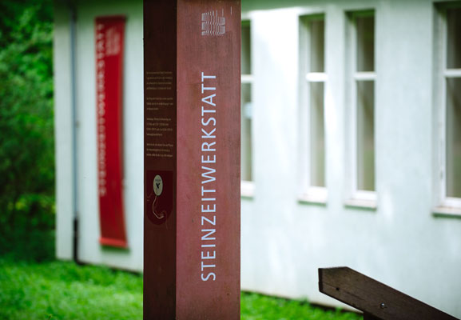
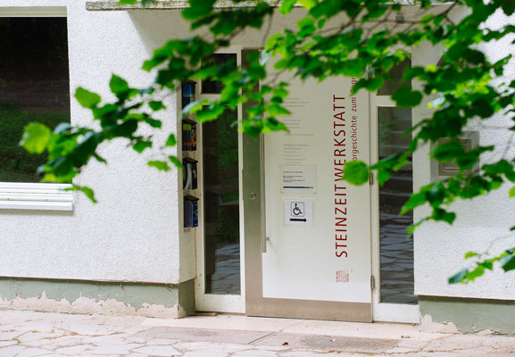
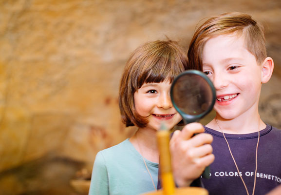
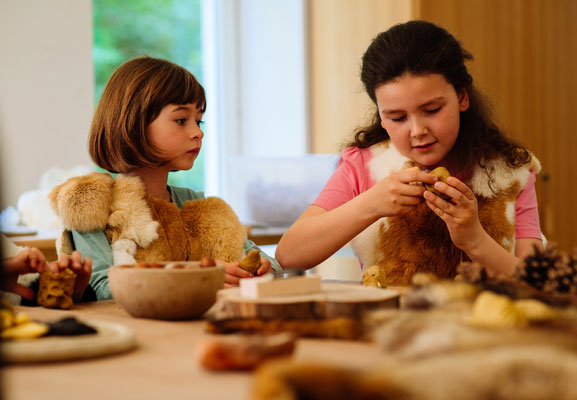
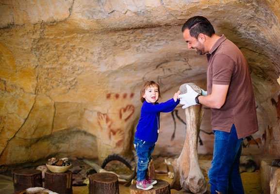
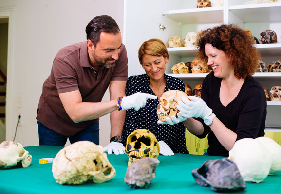
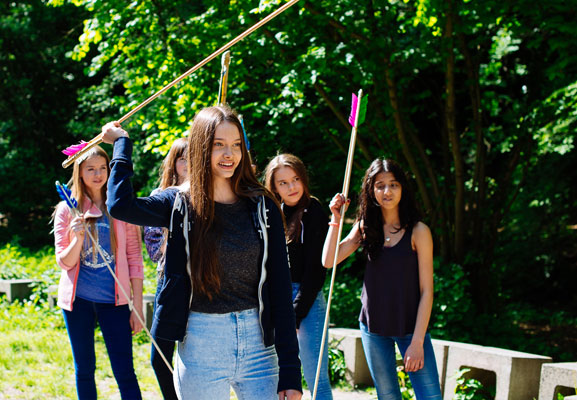

Steinzeitliches Handwerk
Möchten Sie auch einmal mit einer echten Knochennadel nähen, ein Messer mit einer Feuersteinklinge erstellen, ein steinzeitliches Feuerzeug
kennenlernen oder mit Pfeil und Bogen schießen? Dann buchen Sie einen Workshop in der Steinzeitwerkstatt des Neanderthal Museums.
Hier können
Klein und Groß die Herstellung steinzeitlicher Objekte kennenlernen und selbst ein Werkstück aus Naturmaterialien bauen, das am Ende sogar mit
nach Hause genommen werden kann.
Sie können sogar einen unterhaltsamen Geburtstag in die Steinzeit verlegen und diesen mit Ihren Freunden oder der Familie bei uns feiern. Dafür
und für viele weitere Gelegenheiten haben wir einige Angebote zur Auswahl.
Buchen Sie einen Workshop
Für den Besuch der Steinzeitwerkstatt ist eine Anmeldung für einen Workshop erforderlich. Welche Workshops das Museum anbietet, erfahren Sie
unter www.neanderthal.de.
Montags bis donnerstags von 9 bis 12 Uhr und von 12.30 - 15.30 Uhr können Sie sich darüber hinaus telefonisch
unter 02104.9797-15 beraten lassen und einen Workshop buchen. Außerhalb dieser Zeiten ist auch eine Buchung per Fax unter 02104.9797-24 möglich.